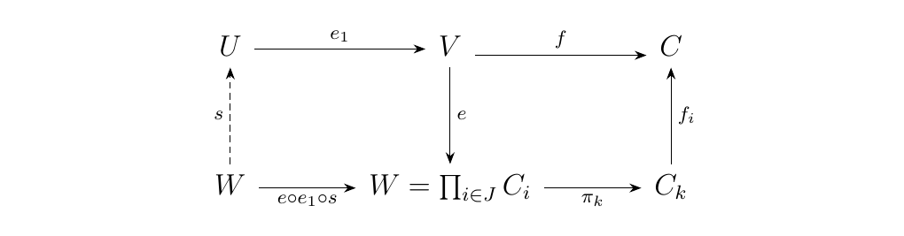

5.6. Existence of Universal Morphisms and Adjoint Functors
When we introduced functors, we introduced several if and only if propositions which gave us criterion on the existence of an adjoint functor. Notably, we showed that if there exists an adjunction
(that is, the classic bijection of homsets which is natural) then there exist universal morphisms
for all objects \(C, D\). Furthermore, we only need one of the universal morphisms to derive an adjunction. Since universal morphisms are simply initial objects in some comma category, we have the following proposition.
Let \(G: \dd \to \cc\) be a functor. Then \(G\) has a left adjoint if and only if for each \(C \in \cc\), the comma category \(C \downarrow G\) has an initial object.
- [\(\bm{\implies}\)] Suppose \(G\) has a left adjoint \(F: \cc \to \dd\). Then for each \(C \in \cc\), there exists a universal morphism \(\eta_C: C \to G(F(C))\). Now in the comma category, objects will be of the form
where morphisms between \((D, f: C \to G(D))\) and \((D', f': C \to G(D'))\) will be induced by morphisms \(h: D \to D'\) such that \ commutes. First, observe that \((F(C), \eta_C: C \to G(F(C)))\) is an object of the comma category. Second, observe that the bijection of homsets
(natural in \(C, D\)) guarantees that every object \((D, f: C \to G(D))\) in the comma category corresponds uniquely to a morphism \(h: F(C) \to D\). Moreover, uniqueness guarantees that the diagram \ must commute. Hence, \((F(C), \eta_C: C \to G(F(C)) )\) is an initial object \(C \downarrow G\).
- [\(\impliedby\)] Now suppose that \(C \downarrow G\) has an initial object \((D, \eta_C: C \to G(D))\). Actually, denote the object \(D\) as \(F(C)\). When we write \(F(C)\), we're not denoting a functor, because we'll show this is a functor. Anyways, our initial object can be written as
This defines a mapping on objects \(C \mapsto F(C)\). To show that this
is a functor, suppose we have a morphism \(f: C \to C'\) in \(\cc\). Then
we have square
\
 Adding the final leg to this diagram would show that \(F\) is a functor. But
since \((F(C), \eta_C: C \to G(F(C)))\) is an initial object in \((C \downarrow G)\),
and \((F(C'), \eta_{C'}: C' \to G(F(C)))\) is an object in this category,
there must be a unique morphism \(F(f):F(C) \to F(C')\). Uniqueness of
this morphism forces commutativity of the square
\
and therefore \(F\) is a functor. Simultaneously, this shows \(F\) is left adjoint
to \(G\), as desired.
Adding the final leg to this diagram would show that \(F\) is a functor. But
since \((F(C), \eta_C: C \to G(F(C)))\) is an initial object in \((C \downarrow G)\),
and \((F(C'), \eta_{C'}: C' \to G(F(C)))\) is an object in this category,
there must be a unique morphism \(F(f):F(C) \to F(C')\). Uniqueness of
this morphism forces commutativity of the square
\
and therefore \(F\) is a functor. Simultaneously, this shows \(F\) is left adjoint
to \(G\), as desired.
We can repeat the proof to achieve the following result as well.
Let \(F: \cc \to \dd\) be a functor. Then \(F\) has a right adjoint if and only if for each \(D \in D\), the comma category \(D \downarrow F\) has a terminal object. Thus we see that initial and terminal objects are key to figuring out when a functor has a left or right adjoint, and hence when they preserve limits. We can investigate a little deeper into this.
(Initial Object Existence.) If \(\cc\) is a complete category with small homsets, then \(\cc\) has an initial object if and only if it satisfies the \textbf{Solution Set Condition}: \begin{center} \begin{minipage}{0.9\textwidth} There exists objects \((C_i)_{i \in I} \in \cc\) such that for every \(C \in \cc\), there is a a morphism \(f_i: C_i \to C\) for at least one \(i \in I\). \end{minipage} \end{center}
-
[\(\implies\)] Suppose \(\cc\) has an initial object \(C'\). Then \(I\) is the one-point set since for each \(C \in C\) there exists one unique morphism \(f: C' \to C\).
-
[\(\impliedby\)] On the other hand, assume the solution set condition. Since \(\cc\) is complete, it must have products, so we may take the product
This product has associated projection morphisms \(\displaystyle \pi_k: \prod_{i \in J}C_i \to C_k\). Therefore, for each object \(C \in \cc\), there exists at least one morphism between \(W\) and \(C\) by composition:
By hypothesis, the collection of endomorphisms \(\hom_{\cc}(W, W)\) is a set. Therefore, we may form an equalizer \(e: V \to W\) of this set. Observe that for each \(C \in \cc\), there exists at least one morphism between \(V\) and \(C\) by composition:
We'll now show that all morphisms are equal. Suppose the contrary; that there are two distinct morphisms \(f, g: V \to C\). Denote the equalizer of this pair as \(e_1: u \to v\). Then we have that \  commutes. The morphism \(s\) is induced via the universality of both \(U\) and \(V\). Since \(e \circ e_1 \circ s : W \to W\), and \(e\) is the equalizer of endomorphisms of \(W\), we have that
Since equalizers are monic, we can cancel on the left side to conclude that
However, this implies that the right inverse of \(e_1\) is \(s \circ e\). Since \(e_1\) is already monic, it must be an isomorphism. Hence \(f = g\), so that \(V\) is an initial object as desired.
We can now combine all of our propositions and theorems into the following one, which is the main adjoint functor theorem of interest.
[ (General Adjoint Functor Theorem.)] Let \(\dd\) be complete with small homsets. A functor \(G: \dd \to \cc\) has a left adjoint if and only if it preserves all small limits and satisfies the solution set condition: \begin{center} \begin{minipage}{0.9\textwidth} For each \(C \in \cc\), there exists a set of objects \((D_i)_{i \in I}\) \(\dd\) and a family of arrows
such that for every morphism \(h: C \to G(D)\), there exists a \(j \in I\) and a morphism \(t: D_j \to D\) such that
\end{minipage}
\end{center}
\textcolor{Plum}{The above theorem helps us find out when we can get a left adjoint. Prior to this theorem, we already know what happened if we were given a functor who has a left adjoint. Namely, it must preserve limits. This natural question one would then ask is if the converse holds. The above theorem tells us no, the converse doesn't hold and in fact we need to make sure the functor satisfies the \textbf{solution set condition}. In the next section, we'll give an example of a functor which preserves limits from a complete category, but still has no left adjoint.}
As a converse to the above theorem, we have the following.
[ (Representability Theorem.)] Let \(\cc\) be a small, complete category. A functor \(K: \cc \to **Set**\) is representable if and only if \(K\) preserves limits and satisfies the following solution set condition: \begin{center} \begin{minipage}{0.9\textwidth} There exists a set \(S \subset \ob(\cc)\) such that for any \(C \in \cc\) and any \(x \in K(C)\), there exists an \(s \in S\), an element \(y \in K(s)\) and an arrow
\end{minipage} \end{center}